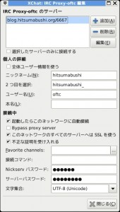

やりたいこと
最近、自分の興味のあるソフトウェアのIRCによく引きこもっています。
自宅のPCはつけっぱなしにしておけば、全部のログを見れるのですが、
会社やスマホで見るときには、接続している間のことしか確認できず、若干もどかしいです。
そういうわけで、ZNCサーバーを立てて、IRCのログを出先からでも確認できるようにしましょう。
実現すること
- スマホからIRCのログを見る
作業環境
# lsb_release -a
No LSB modules are available.
Distributor ID: Debian
Description: Debian GNU/Linux 7.5 (wheezy)
Release: 7.5
Codename: wheezy
インストール
色んなブログでは、build-depして自前でビルドするように書かれているが、今はパッケージがあるので、それを使おう。
$ sudo apt-get install znc
設定
-
ユーザーの作成
zncを動かすユーザーを作成しておく。$ useradd -d /home/znc -s /bin/bash -m znc -
設定ファイルの作成
適当に答えるだけです。
設定値もモジュールも後からどうにでもなると思うので、気にしない。
webadminを入れて、webから設定をできるようにしておきます。$ znc --makeconf [ ** ] Building new config [ ** ]. [ ** ] First let's start with some global settings... [ ** ]. [ ?? ] What port would you like ZNC to listen on? (1025 to 65535): 6667 [ ?? ] Would you like ZNC to listen using SSL? (yes/no) [no]:. [ ?? ] Would you like ZNC to listen using ipv6? (yes/no) [yes]: no [ ?? ] Listen Host (Blank for all ips):. [ ok ] Verifying the listener.... [ ** ]. [ ** ] -- Global Modules -- [ ** ]. [ ** ] +-----------+----------------------------------------------------------+ [ ** ] | Name | Description | [ ** ] +-----------+----------------------------------------------------------+ [ ** ] | partyline | Internal channels and queries for users connected to znc | [ ** ] | webadmin | Web based administration module | [ ** ] +-----------+----------------------------------------------------------+ [ ** ] And 13 other (uncommon) modules. You can enable those later. [ ** ]. [ ?? ] Load global module <partyline>? (yes/no) [no]:. [ ?? ] Load global module <webadmin>? (yes/no) [no]: yes [ ** ]. [ ** ] Now we need to set up a user... [ ** ] ZNC needs one user per IRC network. [ ** ]. [ ?? ] Username (AlphaNumeric): hitsumabushi [ ?? ] Enter Password:. [ ?? ] Confirm Password:. [ ?? ] Would you like this user to be an admin? (yes/no) [yes]:. [ ?? ] Nick [hitsumabushi]:. [ ?? ] Alt Nick [hitsumabushi_]:. [ ?? ] Ident [hitsumabushi]:. [ ?? ] Real Name [Got ZNC?]: <name> [ ?? ] Bind Host (optional):. [ ?? ] Number of lines to buffer per channel [50]:. [ ?? ] Would you like to keep buffers after replay? (yes/no) [no]:. [ ?? ] Default channel modes [+stn]:. [ ** ]. [ ** ] -- User Modules -- [ ** ]. [ ** ] +-------------+------------------------------------------------------------------------------------------------------------+ [ ** ] | Name | Description | [ ** ] +-------------+------------------------------------------------------------------------------------------------------------+ [ ** ] | admin | Dynamic configuration of users/settings through IRC. Allows editing only yourself if you're not ZNC admin. | [ ** ] | chansaver | Keep config up-to-date when user joins/parts | [ ** ] | keepnick | Keep trying for your primary nick | [ ** ] | kickrejoin | Autorejoin on kick | [ ** ] | nickserv | Auths you with NickServ | [ ** ] | perform | Keeps a list of commands to be executed when ZNC connects to IRC. | [ ** ] | simple_away | Auto away when last client disconnects | [ ** ] +-------------+------------------------------------------------------------------------------------------------------------+ [ ** ] And 36 other (uncommon) modules. You can enable those later. [ ** ]. [ ?? ] Load module <admin>? (yes/no) [no]: yes [ ?? ] Load module <chansaver>? (yes/no) [no]:. [ ?? ] Load module <keepnick>? (yes/no) [no]:. [ ?? ] Load module <kickrejoin>? (yes/no) [no]:. [ ?? ] Load module <nickserv>? (yes/no) [no]: yes [ ?? ] Load module <perform>? (yes/no) [no]:. [ ?? ] Load module <simple_away>? (yes/no) [no]: yes [ ** ]. [ ** ] -- IRC Servers -- [ ** ] Only add servers from the same IRC network. [ ** ] If a server from the list can't be reached, another server will be used. [ ** ]. [ ?? ] IRC server (host only): irc.freenode.net [ ?? ] [irc.freenode.net] Port (1 to 65535) [6667]:. [ ?? ] [irc.freenode.net] Password (probably empty):.... [ ?? ] Does this server use SSL? (yes/no) [no]:. [ ** ]. [ ?? ] Would you like to add another server for this IRC network? (yes/no) [no]:. [ ** ]. [ ** ] -- Channels -- [ ** ]. [ ?? ] Would you like to add a channel for ZNC to automatically join? (yes/no) [yes]:. [ ?? ] Channel name: #ceph [ ?? ] Would you like to add another channel? (yes/no) [no]:. [ ** ]. [ ?? ] Would you like to set up another user (e.g. for connecting to another network)? (yes/no) [no]:. [ ok ] Writing config [/home/znc/.znc/configs/znc.conf].... [ ** ]. [ ** ] To connect to this ZNC you need to connect to it as your IRC server [ ** ] using the port that you supplied. You have to supply your login info [ ** ] as the IRC server password like this: user:pass. [ ** ]. [ ** ] Try something like this in your IRC client... [ ** ] /server <znc_server_ip> 6667 hitsumabushi:<pass> [ ** ] And this in your browser... [ ** ] http://<znc_server_ip>:6667/ [ ** ]. [ ?? ] Launch ZNC now? (yes/no) [yes]:... [ ok ] Opening Config [/home/znc/.znc/configs/znc.conf].... [ ok ] Loading Global Module [webadmin]... [/usr/lib/znc/webadmin.so] [ ok ] Binding to port [6667].... [ ** ] Loading user [hitsumabushi] [ ok ] Adding Server [irc.freenode.net 6667 ].... [ ok ] Adding Server [irc.oftc.net 6667 ].... [ ok ] Loading Module [admin]... [/usr/lib/znc/admin.so] [ ok ] Loading Module [nickserv]... [/usr/lib/znc/nickserv.so] [ ok ] Loading Module [simple_away]... [/usr/lib/znc/simple_away.so] [ ok ] Forking into the background... [pid: 27494] [ ** ] ZNC 0.206+deb2 - http://znc.in
-
Webからzncに接続する
ブラウザから http(s)://hostname:6667 にアクセスする
ログインして、List Users→Editを開いて、log モジュールにチェックを入れておくと、IRCのログを書いてくれる。 -
クライアントから接続する
xchatでやってみた。
SSLで接続する場合には、ネットワーク一覧の設定から、SSLで接続するように設定をし、SSL不正な証明書を受け入れるようにしておく必要がある。
例として、zncサーバーが blog.hitsumabushi.org:6667, ユーザー名が oftc, パスワードが 123456 というユーザーで接続したことにすると、以下のようになる。

おわり
これで快適なIRC生活がおくれるぞ！
Comments
comments powered by Disqus